A map of prediction tasks in epigenomics, and the evaluation traps specific to genomic data
Machine learning from scratch built a small classifier and measured it. This unit looks outward: what does the field try to predict from sequence, chromatin and methylation, and how do we know whether a reported performance is real?
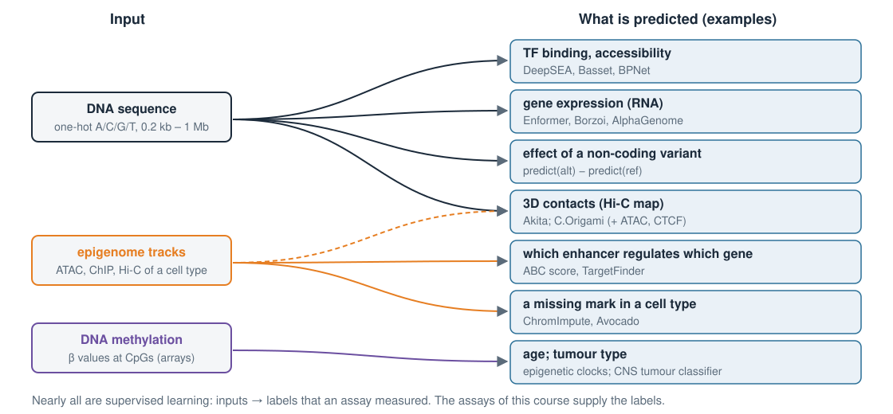
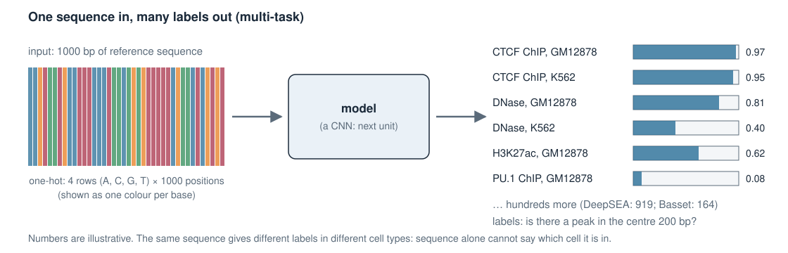
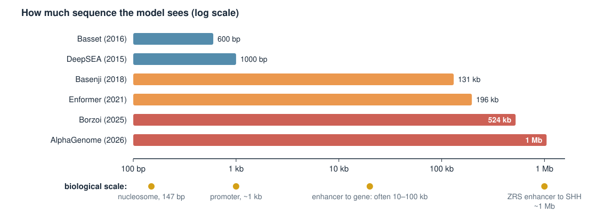
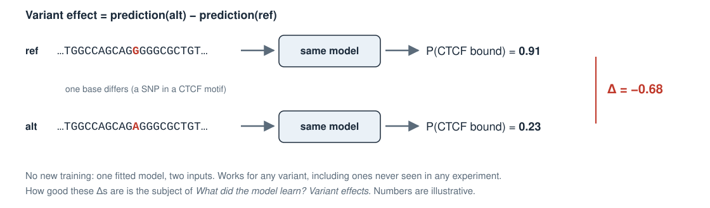
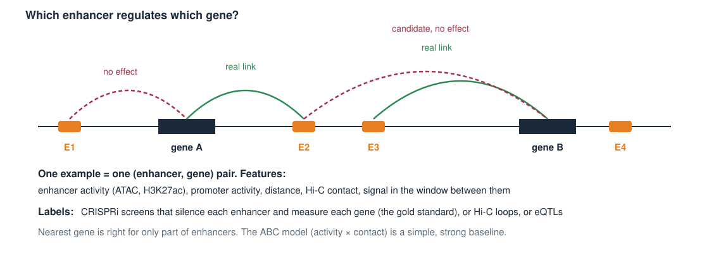
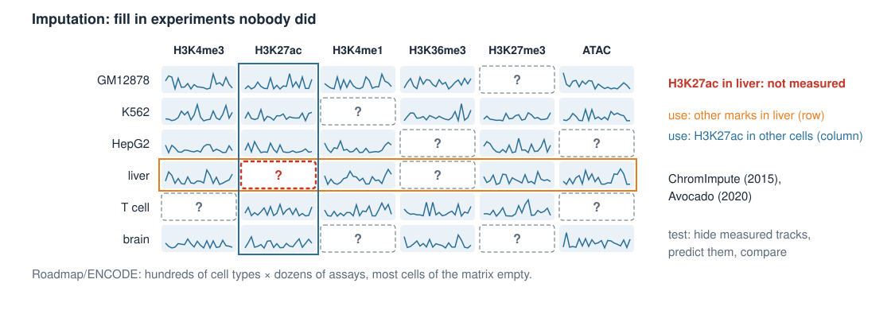
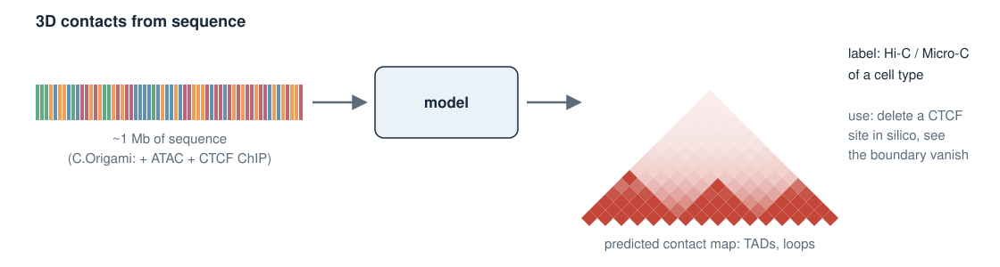
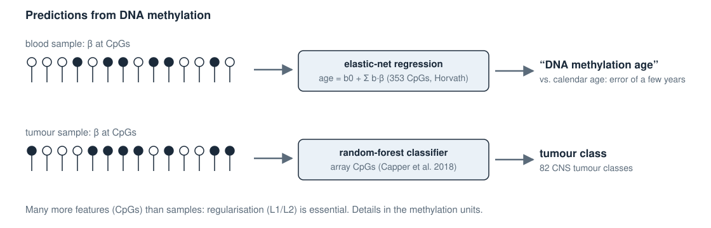
| task | input | labels from | the test should be |
|---|---|---|---|
| binding, accessibility | sequence window | ChIP-seq, ATAC/DNase peaks | held-out chromosomes; other cell types |
| expression | 100 kb – 1 Mb sequence | CAGE, RNA-seq | held-out regions; other individuals |
| variant effect | ref and alt sequence | allelic imbalance, eQTL, MPRA | variants never seen in training |
| enhancer–gene | pair features | CRISPRi screens, eQTL | held-out genes and chromosomes |
| imputation | other tracks | measured tracks | hidden tracks; other cell types |
| 3D contacts | sequence (+ tracks) | Hi-C, Micro-C | held-out regions; other cell types |
| age, tumour type | CpG methylation | age, pathology | independent cohorts, other labs |
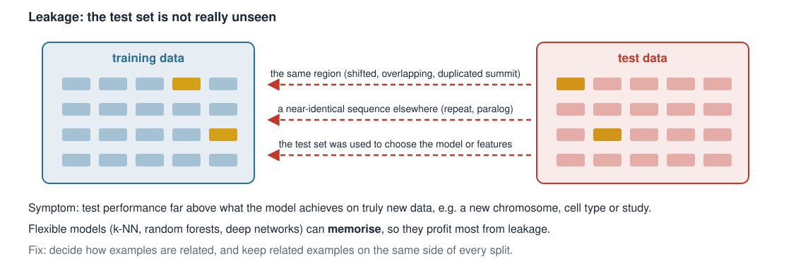
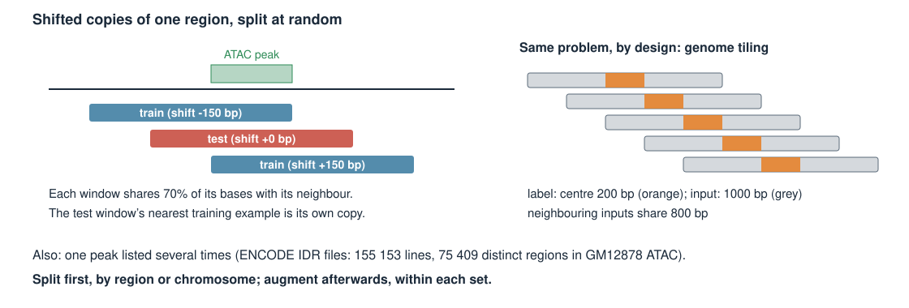
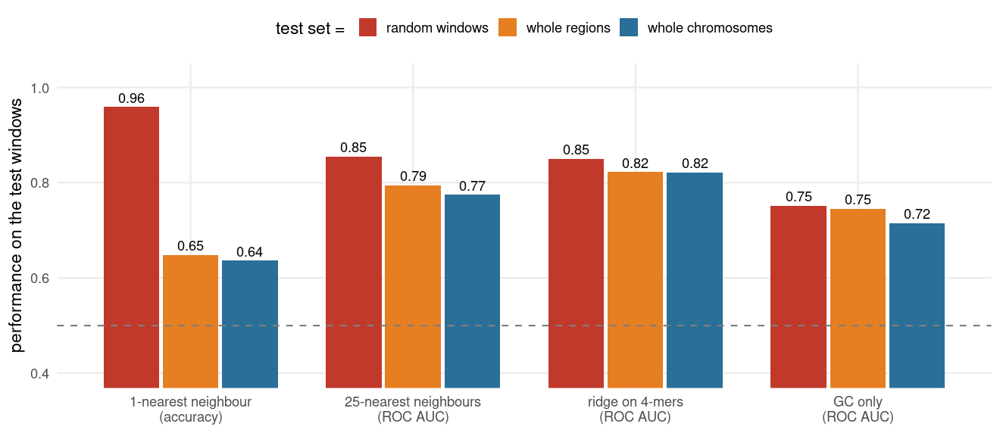
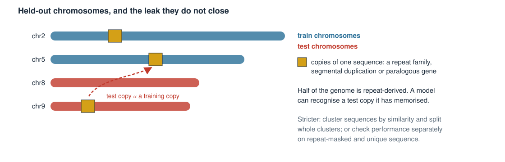
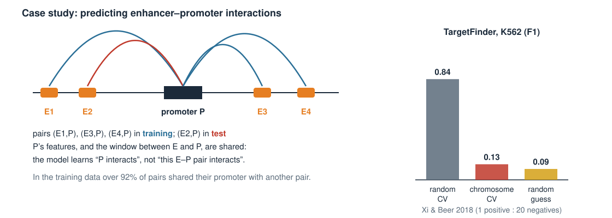
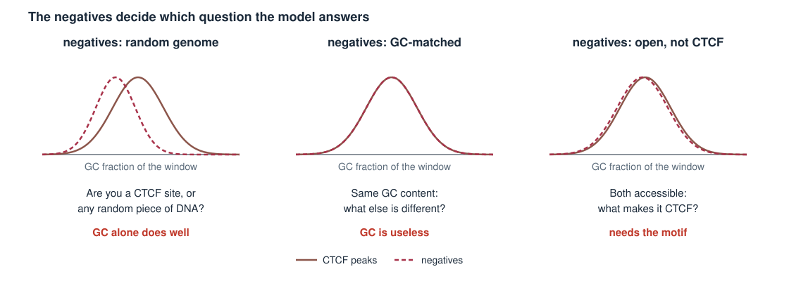
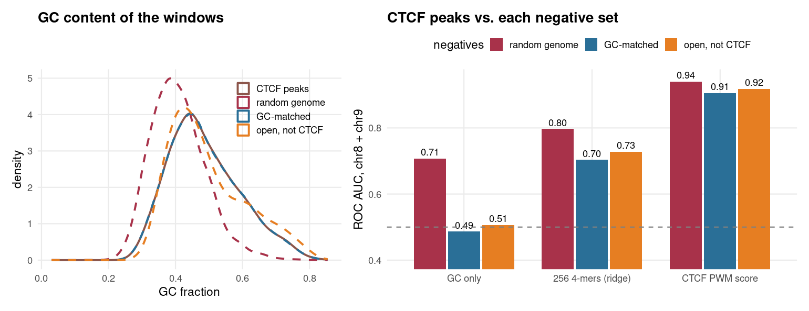
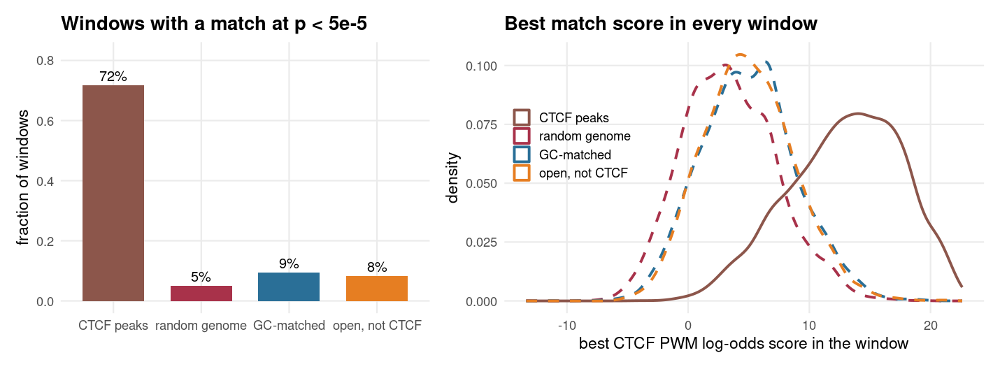
p.cutoff = 1 for a continuous score (else 0.83; see How a CNN reads DNA).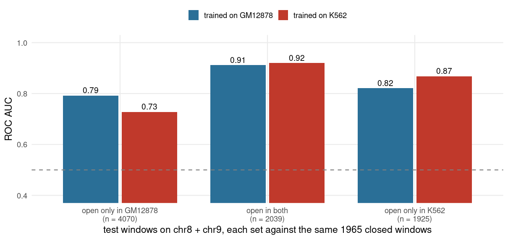
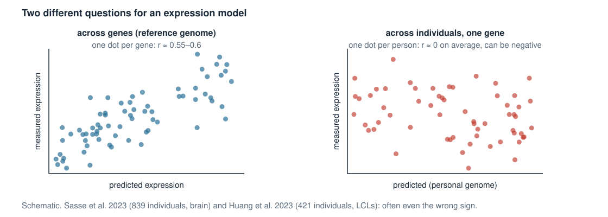
| question | warning signs |
|---|---|
| What exactly is predicted, and for what use? | test set does not match the intended use (new cell type, new person) |
| How were the data split? | random windows; shifted or overlapping windows; features chosen on all data |
| What are the negatives? | random genome for a GC-rich target; negatives from other experiments or batches |
| Which baselines? | no GC / k-mer / known-motif / nearest-gene baseline; only other deep models |
| Which metric, at which class balance? | accuracy on imbalanced data; PR AUC without the prevalence; balanced test sets only |
| Was the test set used once? | many architectures tried on the test set; no independent validation |
| Does it generalise? | one cell type, one cohort, one lab; no external data set |
| idea | key fact |
|---|---|
| sequence → binding, accessibility | CNNs on 0.5–2 kb; one output per assay and cell type (DeepSEA, Basset, BPNet) |
| sequence → expression | long context (131 kb – 1 Mb): Basenji, Enformer, Borzoi, AlphaGenome |
| variant effects | predict(alt) − predict(ref) with any trained sequence model |
| other tasks | enhancer–gene links (ABC, CRISPRi labels), imputation, 3D contacts, clocks, tumour classes |
| leakage | near-copies across the split; memorising models gain most (1-NN: 96% → 65%) |
| splits | group related examples; hold out chromosomes; mind repeats and paralogs |
| negatives | define the question; GC-matched negatives remove the GC shortcut |
| baselines | GC, k-mers, one PWM, nearest gene; report them |
| generalisation | other cell types and other individuals are harder tests than other chromosomes |
Not required reading and not examined. For those who want the primary literature.